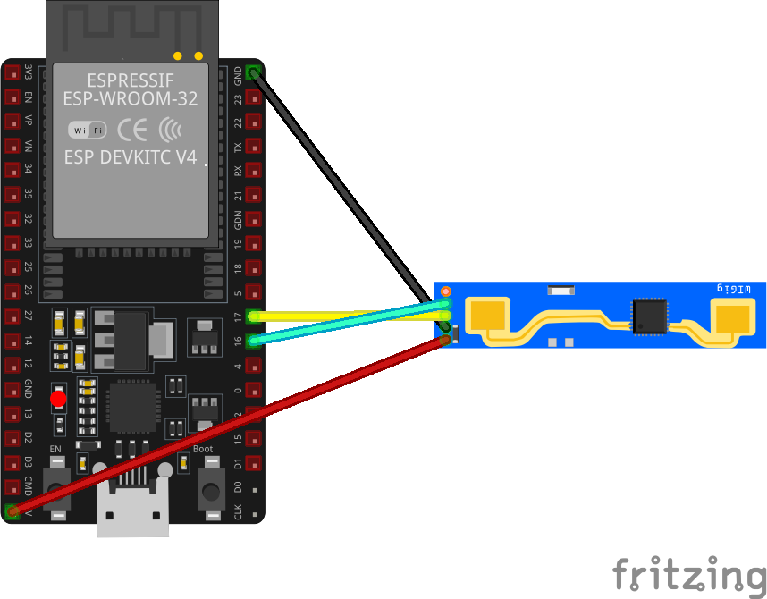
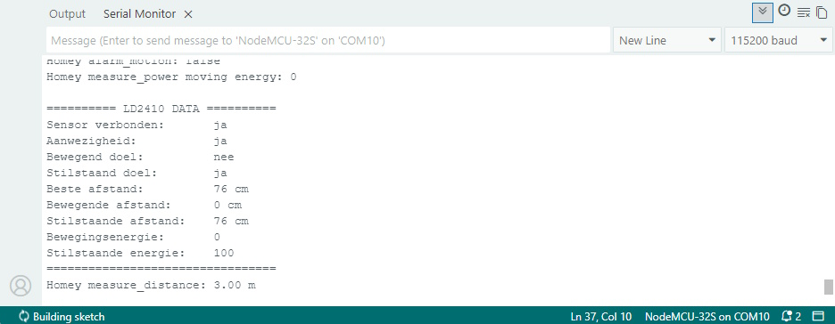
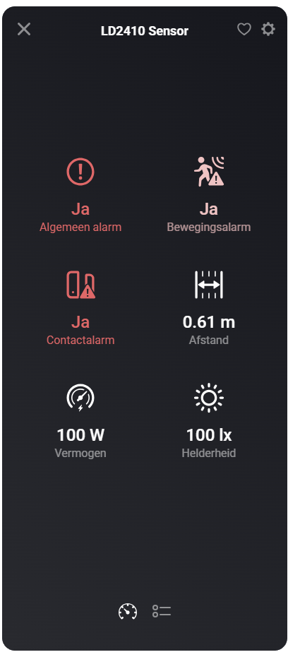
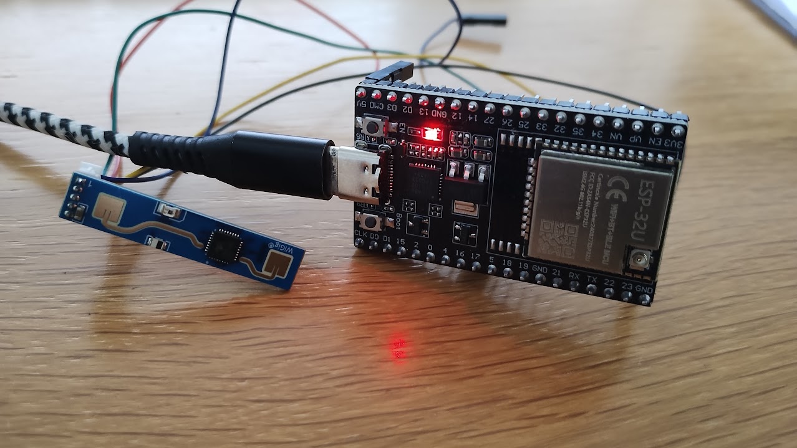

Een gewone bewegingssensor is handig, maar wie al wat langer met domotica bezig is kent het probleem: je zit rustig op de bank, leest een boek of kijkt televisie en ineens denkt je slimme huis dat de kamer leeg is. Licht uit. Gezellig.
Dat kan slimmer. In dit project bouwen we daarom een aanwezigheidssensor met een LD2410 mmWave radar, een NodeMCU-32S ESP32 en Homeyduino. De ESP32 leest de sensor via UART uit en stuurt de gegevens naar Homey. Zo kun je niet alleen zien óf er iemand is, maar ook of iemand beweegt, stil aanwezig is en op welke afstand de detectie ongeveer plaatsvindt.
Wat ga je bouwen?
Je maakt een zelfbouw aanwezigheidssensor die je als Homeyduino-apparaat toevoegt aan Homey. De LD2410-radarmodule wordt via UART aangesloten op de ESP32 en levert meerdere waardes die je in Homey-flows kunt gebruiken.
- Aanwezigheid en beweging → Homey ziet of er iemand in de ruimte is, of die persoon beweegt of juist stil aanwezig blijft.
- Afstand en detectiesterkte → naast simpele aan/uit-detectie krijg je ook afstand en energiewaarden waarmee je later kunt finetunen.
Het eindresultaat is vooral interessant voor ruimtes waar een gewone PIR-sensor tekortschiet. Denk aan de woonkamer, slaapkamer, werkkamer of een leeshoek waar je langere tijd stil kunt zitten.
Benodigdheden
- NodeMCU-32S ESP32-board of vergelijkbaar ESP32 DevKit-board
- HLK-LD2410 of LD2410B mmWave radarsensor
- Dupontkabels
- Arduino IDE met ESP32-boardondersteuning
- Homeyduino-library en de LD2410-library van Nick Reynolds
Handige links bij dit project
Dit zijn producten die aansluiten op de benodigdheden in dit artikel.
Stap-voor-stap uitleg
1. Sluit de LD2410 aan op de ESP32
De LD2410 werkt op 5V en praat via UART met de ESP32. Gebruik hiervoor bij voorkeur niet de standaard RX- en TX-pinnen die ook voor USB/Serial gebruikt worden, maar sluit de sensor aan op GPIO16 en GPIO17. Dat voorkomt gedoe tijdens uploaden en testen.
- LD2410 VCC → 5V / VIN
- LD2410 GND → GND
- LD2410 TX → GPIO16 op de ESP32
- LD2410 RX → GPIO17 op de ESP32

2. Controleer de USB-driver en COM-poort
Verschijnt je ESP32 niet als COM-poort in de Arduino IDE, terwijl Windows wel netjes een verbindingsgeluid laat horen? Dan is de kans groot dat de juiste USB-naar-UART-driver nog ontbreekt. Veel ESP32-boards gebruiken een CP210x-chip. De officiële VCP-drivers zijn hier te downloaden via Silicon Labs CP210x USB to UART Bridge VCP Drivers. Na installatie zou je board gewoon als COM-poort zichtbaar moeten zijn.
3. Upload de Homeyduino-code
Vul eerst je eigen WiFi-gegevens in bij WIFI_SSID en WIFI_PASSWORD. Daarna upload je onderstaande code naar de ESP32. De sketch is bewust overzichtelijk opgebouwd in losse onderdelen voor WiFi, radar-uitlezing en Homey-publicatie. Handig, want als je later wilt uitbreiden hoef je niet meteen door een enorme spaghetti aan code te worstelen.
// ========================================================
// Homeyduino LD2410 Presence Sensor voor ESP32
// #SOLID versie
//
// Sensor: HLK-LD2410 / LD2410B
// Board: NodeMCU-32S / ESP32 DevKit
//
// Aansluiten:
// LD2410 VCC -> 5V / VIN
// LD2410 GND -> GND
// LD2410 TX -> GPIO16
// LD2410 RX -> GPIO17
// ========================================================
#include <WiFi.h>
#include <Homey.h>
#include <HardwareSerial.h>
#include <ld2410.h>
// ========================================================
// Debug
// ========================================================
#define DEBUG 1
#if DEBUG
#define DBG_PRINT(x) Serial.print(x)
#define DBG_PRINTLN(x) Serial.println(x)
#else
#define DBG_PRINT(x)
#define DBG_PRINTLN(x)
#endif
// ========================================================
// Configuratie
// ========================================================
namespace Config {
// WiFi
constexpr const char* WIFI_SSID = "SSID";
constexpr const char* WIFI_PASSWORD = "PASSWORD";
constexpr unsigned long WIFI_CONNECT_TIMEOUT_MS = 20000;
constexpr unsigned long WIFI_CHECK_INTERVAL_MS = 30000;
// Homey
constexpr const char* HOMEY_NAME = "LD2410 Sensor";
constexpr const char* HOMEY_CLASS = "sensor";
constexpr unsigned long HOMEY_LOOP_INTERVAL_MS = 10;
constexpr unsigned long HOMEY_REPUBLISH_INTERVAL_MS = 60000;
constexpr unsigned long HOMEY_MIN_UPDATE_INTERVAL_MS = 500;
// LD2410 UART
constexpr int RADAR_RX_PIN = 16; // ESP32 RX <- TX sensor
constexpr int RADAR_TX_PIN = 17; // ESP32 TX -> RX sensor
constexpr unsigned long RADAR_BAUD = 256000;
// Sensor
constexpr unsigned long RADAR_READ_INTERVAL_MS = 250;
// Aanwezigheid blijft nog even actief nadat de sensor niets meer ziet
constexpr unsigned long PRESENCE_OFF_DELAY_MS = 15000;
// Alleen afstand opnieuw publiceren bij minimaal verschil
constexpr int DISTANCE_CHANGE_THRESHOLD_CM = 5;
// Alleen energie opnieuw publiceren bij minimaal verschil
constexpr int ENERGY_CHANGE_THRESHOLD = 2;
// Debug
constexpr unsigned long DEBUG_PRINT_INTERVAL_MS = 1500;
}
// ========================================================
// Globale objecten
// ========================================================
HardwareSerial radarSerial(1);
ld2410 radar;
// ========================================================
// State models
// ========================================================
struct RadarState {
bool connected = false;
bool presence = false;
bool moving = false;
bool stationary = false;
int bestDistanceCm = 0;
int movingDistanceCm = 0;
int stationaryDistanceCm = 0;
int movingEnergy = 0;
int stationaryEnergy = 0;
unsigned long lastPresenceDetectedAt = 0;
};
struct PublishedState {
bool presence = false;
bool moving = false;
bool stationary = false;
int distanceCm = -1;
int movingEnergy = -1;
int stationaryEnergy = -1;
};
RadarState radarState;
PublishedState publishedState;
// ========================================================
// Timers
// ========================================================
unsigned long lastWifiCheckAt = 0;
unsigned long lastRadarReadAt = 0;
unsigned long lastHomeyLoopAt = 0;
unsigned long lastHomeyRepublishAt = 0;
unsigned long lastHomeyUpdateAt = 0;
unsigned long lastDebugPrintAt = 0;
// ========================================================
// WiFi manager
// ========================================================
class WifiManager {
public:
static void begin() {
WiFi.mode(WIFI_STA);
connect();
}
static void maintain() {
if (millis() - lastWifiCheckAt < Config::WIFI_CHECK_INTERVAL_MS) return;
lastWifiCheckAt = millis();
if (WiFi.status() != WL_CONNECTED) {
DBG_PRINTLN("WiFi verbroken. Opnieuw verbinden...");
connect();
}
}
static bool isConnected() {
return WiFi.status() == WL_CONNECTED;
}
private:
static void connect() {
DBG_PRINT("Verbinden met WiFi: ");
DBG_PRINTLN(Config::WIFI_SSID);
WiFi.begin(Config::WIFI_SSID, Config::WIFI_PASSWORD);
unsigned long startAttempt = millis();
while (WiFi.status() != WL_CONNECTED &&
millis() - startAttempt < Config::WIFI_CONNECT_TIMEOUT_MS) {
delay(250);
DBG_PRINT(".");
}
DBG_PRINTLN();
if (WiFi.status() == WL_CONNECTED) {
DBG_PRINT("WiFi verbonden. IP: ");
DBG_PRINTLN(WiFi.localIP());
} else {
DBG_PRINTLN("WiFi verbinden mislukt.");
}
}
};
// ========================================================
// Radar service
// ========================================================
class RadarService {
public:
static void begin() {
radarSerial.begin(
Config::RADAR_BAUD,
SERIAL_8N1,
Config::RADAR_RX_PIN,
Config::RADAR_TX_PIN
);
delay(500);
radarState.connected = radar.begin(radarSerial);
if (radarState.connected) {
DBG_PRINTLN("LD2410 verbonden.");
} else {
DBG_PRINTLN("LD2410 niet gevonden. Controleer bekabeling.");
}
}
static void update() {
if (millis() - lastRadarReadAt < Config::RADAR_READ_INTERVAL_MS) return;
lastRadarReadAt = millis();
radar.read();
bool rawPresence = radar.presenceDetected();
if (rawPresence) {
radarState.lastPresenceDetectedAt = millis();
}
radarState.presence = isPresenceStillValid();
radarState.moving = radar.movingTargetDetected();
radarState.stationary = radar.stationaryTargetDetected();
radarState.movingDistanceCm =
radarState.moving ? radar.movingTargetDistance() : 0;
radarState.stationaryDistanceCm =
radarState.stationary ? radar.stationaryTargetDistance() : 0;
radarState.movingEnergy =
radarState.moving ? radar.movingTargetEnergy() : 0;
radarState.stationaryEnergy =
radarState.stationary ? radar.stationaryTargetEnergy() : 0;
radarState.bestDistanceCm = calculateBestDistanceCm();
debugPrint();
}
private:
static bool isPresenceStillValid() {
return millis() - radarState.lastPresenceDetectedAt <= Config::PRESENCE_OFF_DELAY_MS;
}
static int calculateBestDistanceCm() {
if (radarState.moving) {
return radarState.movingDistanceCm;
}
if (radarState.stationary) {
return radarState.stationaryDistanceCm;
}
return 0;
}
static void debugPrint() {
#if DEBUG
if (millis() - lastDebugPrintAt < Config::DEBUG_PRINT_INTERVAL_MS) return;
lastDebugPrintAt = millis();
Serial.println();
Serial.println("========== LD2410 DATA ==========");
Serial.print("Sensor verbonden: ");
Serial.println(radarState.connected ? "ja" : "nee");
Serial.print("Aanwezigheid: ");
Serial.println(radarState.presence ? "ja" : "nee");
Serial.print("Bewegend doel: ");
Serial.println(radarState.moving ? "ja" : "nee");
Serial.print("Stilstaand doel: ");
Serial.println(radarState.stationary ? "ja" : "nee");
Serial.print("Beste afstand: ");
Serial.print(radarState.bestDistanceCm);
Serial.println(" cm");
Serial.print("Bewegende afstand: ");
Serial.print(radarState.movingDistanceCm);
Serial.println(" cm");
Serial.print("Stilstaande afstand: ");
Serial.print(radarState.stationaryDistanceCm);
Serial.println(" cm");
Serial.print("Bewegingsenergie: ");
Serial.println(radarState.movingEnergy);
Serial.print("Stilstaande energie: ");
Serial.println(radarState.stationaryEnergy);
Serial.println("=================================");
#endif
}
};
// ========================================================
// Homey service
// ========================================================
class HomeyService {
public:
static void begin() {
Homey.begin(Config::HOMEY_NAME);
Homey.setClass(Config::HOMEY_CLASS);
Homey.addCapability("alarm_generic"); // algemene aanwezigheid
Homey.addCapability("alarm_motion"); // bewegend doel
Homey.addCapability("alarm_contact"); // stilstaand doel
Homey.addCapability("measure_distance"); // afstand in meters
Homey.addCapability("measure_power"); // bewegingsenergie
Homey.addCapability("measure_luminance"); // stilstaande energie
publishAll();
DBG_PRINTLN("Homeyduino gestart.");
}
static void loop() {
runHomeyLoop();
publishOnChange();
republishPeriodically();
}
private:
static void runHomeyLoop() {
if (millis() - lastHomeyLoopAt < Config::HOMEY_LOOP_INTERVAL_MS) return;
lastHomeyLoopAt = millis();
Homey.loop();
}
static void publishOnChange() {
if (millis() - lastHomeyUpdateAt < Config::HOMEY_MIN_UPDATE_INTERVAL_MS) return;
lastHomeyUpdateAt = millis();
publishPresenceIfChanged();
publishMovingIfChanged();
publishStationaryIfChanged();
publishDistanceIfChanged();
publishMovingEnergyIfChanged();
publishStationaryEnergyIfChanged();
}
static void republishPeriodically() {
if (millis() - lastHomeyRepublishAt < Config::HOMEY_REPUBLISH_INTERVAL_MS) return;
lastHomeyRepublishAt = millis();
publishAll();
}
static void publishPresenceIfChanged() {
if (radarState.presence == publishedState.presence) return;
Homey.setCapabilityValue("alarm_generic", radarState.presence);
publishedState.presence = radarState.presence;
DBG_PRINT("Homey alarm_generic: ");
DBG_PRINTLN(radarState.presence ? "true" : "false");
}
static void publishMovingIfChanged() {
if (radarState.moving == publishedState.moving) return;
Homey.setCapabilityValue("alarm_motion", radarState.moving);
publishedState.moving = radarState.moving;
DBG_PRINT("Homey alarm_motion: ");
DBG_PRINTLN(radarState.moving ? "true" : "false");
}
static void publishStationaryIfChanged() {
if (radarState.stationary == publishedState.stationary) return;
Homey.setCapabilityValue("alarm_contact", radarState.stationary);
publishedState.stationary = radarState.stationary;
DBG_PRINT("Homey alarm_contact: ");
DBG_PRINTLN(radarState.stationary ? "true" : "false");
}
static void publishDistanceIfChanged() {
if (abs(radarState.bestDistanceCm - publishedState.distanceCm) <
Config::DISTANCE_CHANGE_THRESHOLD_CM) {
return;
}
Homey.setCapabilityValue(
"measure_distance",
convertCmToMeters(radarState.bestDistanceCm)
);
publishedState.distanceCm = radarState.bestDistanceCm;
DBG_PRINT("Homey measure_distance: ");
DBG_PRINT(convertCmToMeters(radarState.bestDistanceCm));
DBG_PRINTLN(" m");
}
static void publishMovingEnergyIfChanged() {
if (abs(radarState.movingEnergy - publishedState.movingEnergy) <
Config::ENERGY_CHANGE_THRESHOLD) {
return;
}
Homey.setCapabilityValue("measure_power", radarState.movingEnergy);
publishedState.movingEnergy = radarState.movingEnergy;
DBG_PRINT("Homey measure_power moving energy: ");
DBG_PRINTLN(radarState.movingEnergy);
}
static void publishStationaryEnergyIfChanged() {
if (abs(radarState.stationaryEnergy - publishedState.stationaryEnergy) <
Config::ENERGY_CHANGE_THRESHOLD) {
return;
}
Homey.setCapabilityValue("measure_luminance", radarState.stationaryEnergy);
publishedState.stationaryEnergy = radarState.stationaryEnergy;
DBG_PRINT("Homey measure_luminance stationary energy: ");
DBG_PRINTLN(radarState.stationaryEnergy);
}
static void publishAll() {
Homey.setCapabilityValue("alarm_generic", radarState.presence);
Homey.setCapabilityValue("alarm_motion", radarState.moving);
Homey.setCapabilityValue("alarm_contact", radarState.stationary);
Homey.setCapabilityValue(
"measure_distance",
convertCmToMeters(radarState.bestDistanceCm)
);
Homey.setCapabilityValue("measure_power", radarState.movingEnergy);
Homey.setCapabilityValue("measure_luminance", radarState.stationaryEnergy);
publishedState.presence = radarState.presence;
publishedState.moving = radarState.moving;
publishedState.stationary = radarState.stationary;
publishedState.distanceCm = radarState.bestDistanceCm;
publishedState.movingEnergy = radarState.movingEnergy;
publishedState.stationaryEnergy = radarState.stationaryEnergy;
DBG_PRINTLN("Homey status volledig gepubliceerd.");
}
static float convertCmToMeters(int centimeters) {
return centimeters / 100.0;
}
};
// ========================================================
// Setup
// ========================================================
void setup() {
#if DEBUG
Serial.begin(115200);
delay(1000);
#endif
DBG_PRINTLN();
DBG_PRINTLN("Start ESP32 LD2410 Homeyduino #SOLID sensor...");
WifiManager::begin();
RadarService::begin();
HomeyService::begin();
}
// ========================================================
// Loop
// ========================================================
void loop() {
WifiManager::maintain();
RadarService::update();
HomeyService::loop();
}4. Test de seriële output
Open de Serial Monitor op 115200 baud. Wanneer alles goed is aangesloten, zie je de waardes voorbij komen: aanwezigheid, bewegend doel, stilstaand doel, afstand en energie. Let op: de LD2410 praat zelf met 256000 baud tegen de ESP32, maar de Serial Monitor blijft in deze sketch gewoon op 115200 baud staan.
5. Voeg de sensor toe aan Homey
Open de Homey app en voeg het Homeyduino-apparaat toe. Zie je niet direct alle waardes verschijnen? Verwijder het apparaat dan een keer en voeg het opnieuw toe. Homey registreert de beschikbare capabilities namelijk op het moment dat je het apparaat toevoegt.

Integratie met Homey
In Homey gebruiken we bestaande capabilities. Deze gebruiken we in dit project om de sensorwaarden van de LD2410 zichtbaar te maken in de Homey-app. Daardoor heten sommige waardes net even anders dan je misschien zou verwachten. Dat is niet erg, zolang je maar weet wat ze betekenen.
De belangrijkste koppelingen zijn:
- Algemeen alarm: algemene aanwezigheid in de ruimte. Deze waarde blijft nog kort actief nadat de sensor niemand meer ziet, zodat het licht niet direct uitvalt bij een korte onderbreking.
- Bewegingsalarm: er wordt een bewegend doel gedetecteerd. Dit is handig voor acties zoals licht fel aanzetten wanneer iemand de kamer binnenkomt.
- Contactalarm: er wordt een stilstaand doel gedetecteerd. In deze opzet gebruiken we dit dus niet als deur- of raamcontact, maar als indicatie dat iemand stil aanwezig is, bijvoorbeeld zittend op de bank of liggend in bed.
- Afstand: de afstand tot het gedetecteerde doel, omgerekend van centimeters naar meters. Deze waarde kun je gebruiken om eenvoudige zones te maken, bijvoorbeeld dichtbij het bed, bij een bureau of verder in de kamer.
- Vermogen: de bewegingsenergie van de sensor. Dit is geen echt stroomverbruik, maar een indicatie van hoe sterk de bewegende detectie is.
- Helderheid: de stilstaande energie van de sensor. Dit is geen echte lichtmeting, maar een indicatie van hoe sterk de stilstaande detectie is.
Voor dagelijks gebruik zijn vooral het algemeen alarm, het bewegingsalarm, het contactalarm en de afstand interessant. De waarden vermogen en helderheid zijn vooral handig tijdens het testen en finetunen, bijvoorbeeld om te zien hoe sterk de sensor iemand detecteert op verschillende plekken in de kamer.

Praktisch gebruik
Juist hier wordt dit project leuk. Een gewone bewegingssensor schakelt vaak prima het licht aan wanneer je binnenkomt, maar is minder geschikt wanneer je daarna stil zit. Met deze LD2410 kun je veel natuurlijkere flows maken. Fel licht bij binnenkomst, gedimd licht wanneer iemand rustig aanwezig is en pas uitschakelen wanneer de kamer echt leeg is.

Aandachtspunten
- Gebruik 5V/VIN voor de voeding van de LD2410 en verbind de GND van de sensor met de GND van de ESP32.
- Gebruik GPIO16 en GPIO17 voor de sensor-UART; de standaard RX/TX-pinnen kunnen conflicteren met USB en Serial Monitor.
measure_powerenmeasure_luminanceworden hier bewust hergebruikt als testwaarden voor bewegingsenergie en stilstaande energie.
Conclusie
Met een LD2410, een NodeMCU-32S ESP32 en Homeyduino kun je een compacte aanwezigheidssensor bouwen die veel meer informatie geeft dan alleen beweging. De sensor ziet aanwezigheid, onderscheidt bewegend en stilstaand gedrag en publiceert afstand en detectiesterkte naar Homey. Daarmee vormt dit project een sterke basis voor slimme verlichting, slaapkamerautomatisering en andere flows waarbij gewone PIR-sensoren te beperkt zijn.
Ga je met dit project aan de slag? Dan is dit typisch zo'n sensor die je na één succesvolle test waarschijnlijk op meerdere plekken in huis wilt gebruiken. Bestel dus meteen een paar LD2410-modules en ESP32-boardjes mee, dan kun je jouw eigen Huisvanvandaag weer een stukje slimmer maken.